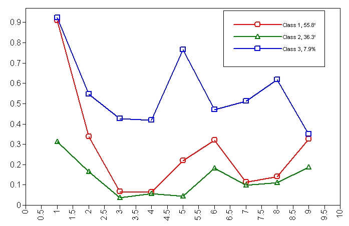

潜类分析（Latent Class Analysis, LCA）是一种统计方法，用于识别隐藏在观测变量背后的潜在类别或类型。LCA假设观测变量是由潜在类别决定的，并且每个潜在类别具有其独特的条件概率分布。通过分析这些条件概率，LCA可以将个体划分为不同的潜类别，从而揭示隐藏的群体结构。
在LCA中，观测变量通常是分类变量，例如二元变量（是/否，同意/不同意等）。LCA的目标是找出最佳的潜类别数量，并描述每个潜类别的特征。这有助于研究人员理解和解释复杂的数据结构，尤其是在处理涉及不同类型个体或群体的研究时。
这篇教程以介绍如何使用mplus进行潜类分析。以案例为切入点，会介绍潜类分析的基本概念和步骤，以及如何使用mplus进行潜类分析，
最终帮你解读结果。
案例
你对研究成年人的饮酒行为很感兴趣。你没有将饮酒行为概念化为连续变量，而是将其概念化为形成不同的类别或类型。例如，你认为人们分为三种不同的类型：戒酒者、社交饮酒者和酗酒者。由于你无法直接衡量某人属于哪一类，因此这是一个潜在变量（无法直接衡量的变量）。但是，你确实有许多指标可用于将人们分为这些不同的类别。利用这些指标，你希望：
- 创建一个模型，使您可以将这些人分为三种不同类型的饮酒者，希望这符合您的概念，即禁酒者、社交饮酒者和酗酒者。
- 能够根据饮酒者的类型对他们进行分类。计算有多少人被视为禁酒者、社交饮酒者和酗酒者。
- 确定三个潜在类别是否是合适的类别数（即，只有两种类型的饮酒者还是可能有多达四种类型的饮酒者）。
数据介绍
让我们继续上面的示例 1,我们有一个假设的数据文件，其中包含 9 个饮酒行为指标,对于每个指标，都会询问该人该描述是否适用于他/她自己（是或否）,这 9 个指标是:
- 我喜欢喝酒
- 我喝烈酒
- 我早上喝过
- 我上班时喝过
- 我喝酒是为了喝醉
- 我喜欢酒的味道
- 我喝酒有助于睡眠
- 喝酒影响了我的人际关系
- 我经常去酒吧
我们为 1000 名受访者制作了数据，并将数据存储在一个名为lca1.dat 的文件中，这是一个逗号分隔的文件，其中被试 ID 后跟对 9 个问题的回答，编码为 1 表示是，0 表示否。前 10 个样本如下所示：
1 | | id item1 item2 item3 item4 item5 item6 item7 item8 item9 | |
Mplus 代码
注意LCA分析的方法很多，代码也有很多类型，这里只提供了针对本案例的分析代码，
未必适合你的案例，请自己自行调整。 下面的代码中， 井号“#”后面表示注释，可以忽略。
1 | Title: |
代码解读
- Title 为程序提供了标题。
- Data 告诉 Mplus 有关数据文件的信息，数据存储在文件 lca1.dat 中，该文件与命令 INP 文件位于同一文件夹或路径中。Variable 告诉 Mplus 有关数据文件中变量的更多信息。names 语句列出了变量的名称（按它们在数据文件中出现的顺序）。usevariables 语句指示我们将使用哪些变量进行此分析。categorical 语句表示指定的变量是分类变量。classes 语句表示有一个分类潜在变量（我们将其称为 c），它有 3 个级别。
- Analysis 将分析类型指定为混合模型，这是您请求潜在类别分析的方式。
- Plot 用于制作我们上面创建的图。类型为 plot3，series 语句用于将题目与 X 轴关联，其中 item1 标记为 1，item2 标记为 2 … 以及 item9 在 X 轴上标记为 9。
- Savedata 保存原始数据
- 在Mplus中，save is cprob; 这行代码的作用是保存每个观测属于各个类别的条件概率。具体来说，Mplus会创建一个输出文件，其中包含了原始数据以及Mplus估计的每个观测属于每个类别的概率。这些概率可以帮助我们了解每个个体在不同类别中的归属情况，从而进行进一步的分析或分类。
- 在Mplus中，“format is free”是指在编写Mplus程序时，输入数据的格式是自由的。具体来说，这意味着你可以选择不同的数据格式和排列方式，只要它们符合Mplus的读取规则。这种灵活性使得用户可以根据自己的数据结构来组织和输入数据，而不必严格遵循特定的格式要求。
输出结果解读
条件概率
在mplus中，找到这一部分： RESULTS IN PROBABILITY SCALE，
你可以看到如下这样的表格：
1 | Class 1 Class 2 Class 3 Item Label |
这里列出了每一个题目（观测指标）与每一个潜类（潜在类别）的条件概率。
怎么理解其中的数据呢？
从第1题来看，1类和3类的学生非常喜欢喝酒（90.8%和92.3%的学生说是），而2类的学生不太喜欢喝酒（说喜欢喝酒的概率只有31.2%）。从第5项来看，3类有76.5%的学生说他们喝酒是为了喝醉，而1类有21.9%的学生同意这一点，2类只有4.4%的学生说是。
我开始相信第 3 类人可以被贴上“酒鬼”的标签。仅关注第 3 类人（看那一栏），他们非常喜欢喝酒（92%），喝烈酒（54.6%），相当多的人说他们早上和工作时都喝酒（42.6% 和 41.8%），超过一半的人说喝酒影响了他们的人际关系（61.9%）。
看来，2 类人正是我们希望找到的“戒酒者”。他们中喜欢喝酒的人不多（31.2%），喜欢酒味的人不多（18.3%），经常去酒吧的人不多（18.8%），其余问题也很少回答“是”。
剩下的就是第 1 类人了；他们是否符合“社交饮酒者”的概念？他们喜欢喝酒（90.8%），但不像第 3 类人那样经常喝烈酒（33.7% 比 54.6%）。他们很少在早上或工作时喝酒（6.7% 比 6.5%），也很少说喝酒会影响他们的人际关系（14%）。他们说他们经常去酒吧，就像第 3 类人一样（32.5% 比 34.9%），但这也许有道理。社交饮酒者和酗酒者在喜欢喝酒的程度和去酒吧的频率上都相似，但在一些关键方面有所不同，比如在工作时喝酒、早上喝酒以及喝酒对他们人际关系的影响。
我们也可以把上表中的结果以图表的形式表示出来。X 轴表示题目编号，Y 轴表示假设你属于某个特定的饮酒类别，则对给定题目回答“是”的概率。三个不同的饮酒类别表示为三条不同的线。
样本归类
对于每个人，Mplus 都会估计该人属于哪个类别（即该人是哪种类型的饮酒者）。对于给定的人，Mplus 会估计该人属于第一类、第二类或第三类的概率。例如，对于受试者 1，这些概率可能是该人属于第一类的概率为 15%，属于第二类的概率为 80%，属于第三类的概率为 5%。对于这样的人，我会说我认为该人属于第二类，因为该类最有可能。Mplus 还将使用相同类型的规则将人们归为一类。
Mplus 创建一个输出文件，其中包含分析中使用的原始数据（即 item1 到 item9），后面是 Mplus 估计观察结果属于第 1 类、第 2 类和第 3 类的概率。接下来，显示概率最高的类（模态类）。我截取了输出的片段并对其进行了标记，以使其更易于阅读。
1 | Items 1 - 9 |
对于第一个样本（第一行），对这些题目的回答模式表明，该人有 64.5% 的机会属于第 1 类（我们称之为社交饮酒者），有 35.4% 的机会属于第 2 类（戒酒者），有 0.1% 的机会属于第 3 类（酒鬼）。请注意，这些加起来等于 100%（因为一个人必须属于这些类别之一）。对于这个人来说，第 1 类是最有可能的类别，Mplus 在最后一列中指出了这一点。值得注意的是，对于此人，结果模式几乎可以肯定他不是酒鬼，但不太清楚他是社交饮酒者还是戒酒者（可能是因为此人对第 1 项（我喜欢喝酒）回答“是”）。请注意，第三行数据对这些题目的响应模式相同，并且具有相同的预测类概率。考虑数据的第 2 行。此人有 90.1% 的机会是酒鬼，有 9.8% 的机会是社交饮酒者，有 0.1% 的机会是戒酒者。
各类频率统计
一旦我们为每个类别想出一个描述性标签，我们就可以查看被归入每个类别的人数。我预测大约 20% 的人是戒酒者，70% 的人是社交饮酒者，大约 10% 的人是酗酒者。我可以将我的预测与 Mplus 产生的结果进行比较。
你可以找到mplus输出的这部分：
1 | CLASSIFICATION OF INDIVIDUALS BASED ON THEIR MOST LIKELY LATENT CLASS MEMBERSHIP |
在 1000 名受试者中，646 人（64.6%）被归类为第 1 类（我们将其标记为社交饮酒者），66 人（6.6%）被归类为第 3 类（酒鬼），288 人（28.8%）被归类为第 2 类（戒酒者）。这与我的直觉一致，即大多数人都是社交饮酒者，一小部分是酒鬼，而相当一部分是戒酒者。
我们还有第二种方法可以计算类别的大小。我们可以按照属于每个类别的概率比例将成员资格分配给各个类别，而不是将此人视为完全属于类别 1。因此，被试 1 在每个类别中都有分数，类别 1 为 0.645，类别 3 为 0.001，类别 2 为 0.354。Mplus 也以这种方式计算类别大小，如下所示。
1 | FINAL CLASS COUNTS AND PROPORTIONS FOR THE LATENT CLASS PATTERNS |
类别数量
到目前为止，我们一直假设我们选择了正确数量的潜在类别。然而，也许只有两种类型的饮酒者，或者可能有四种或更多类型的饮酒者。到目前为止，我们喜欢三类模型，这既基于我们的理论预期，也基于我们的结果的可解释性。我们可以使用 Vuong-Lo-Mendell-Rubin 检验（mplus设置 TECH11 输出，参见下面的 Mplus 程序）和引导参数似然比检验（使用 TECH 14 ，参见下面的 Mplus 程序）进一步评估我们是否选择了正确的类别数量。此测试将具有 K 个类别（在我们的例子中为 3 个）的模型与具有 (K-1) 个类别（在我们的例子中为 K – 1 = 2 个类别）的模型进行比较。结果如下所示。
1 | TECHNICAL 11 OUTPUT |
Vuong-Lo-Mendell-Rubin 检验的 p 值为 .1457，Lo-Mendell-Rubin 调整后的 LRT 检验的 p 值为 .1500。这些检验表明两个类别就足够了，三个类别并不是真正需要的。但是，自举参数似然比检验的 p 值为 0.0000，因此该检验表明三个类别确实比两个类别好。由于我们已经看到未发表的结果表明自举方法可能更可靠，并且三类别模型符合我们的理论预期，因此我们将采用三类别模型。
注意
- 你是否指定了正确数量的潜类别？也许你指定的类别太多（即，人们大多属于 2 个类别），或者你指定的类别太少（即，人们实际上属于 4 个或更多类别）。
- 你的某些测量/指标是否很糟糕？我们所有的测量对于区分一个人属于哪种类型的饮酒者都非常有用。但是，假设我们有一个测量指标是“你喜欢西兰花吗？”。这将是一个糟糕的指标，每种类型的饮酒者可能都会以类似的方式回答，因此这个问题是丢弃的好选择。
- 在开发了这个模型来识别不同类型的饮酒者之后，我们可能有兴趣尝试预测某人为什么是酒鬼，或者为什么某人是戒酒者。例如，我们可能对父母饮酒是否预示着酗酒感兴趣。这样的分析是可能的，但这里不讨论。